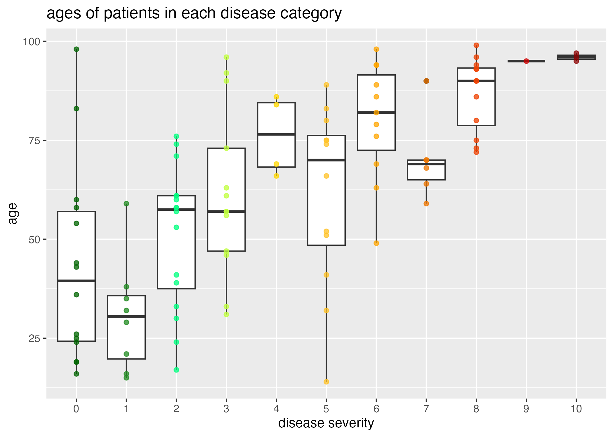
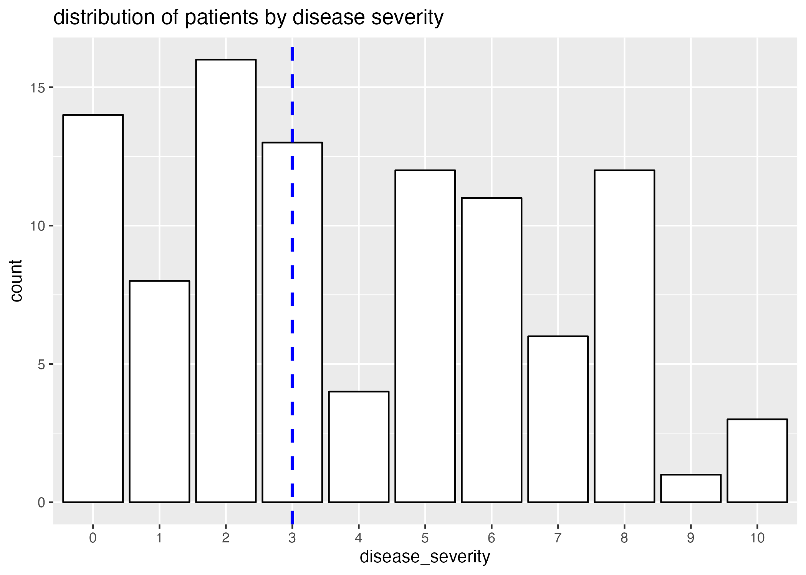
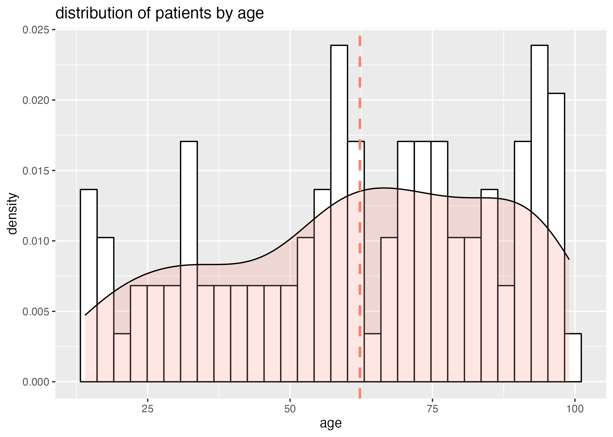
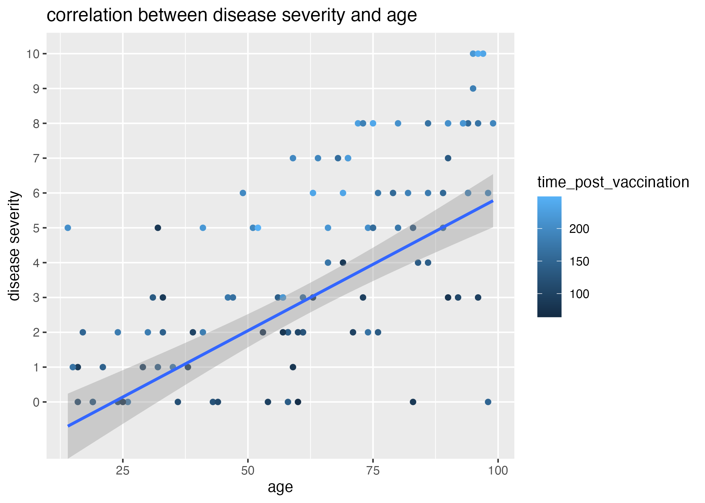
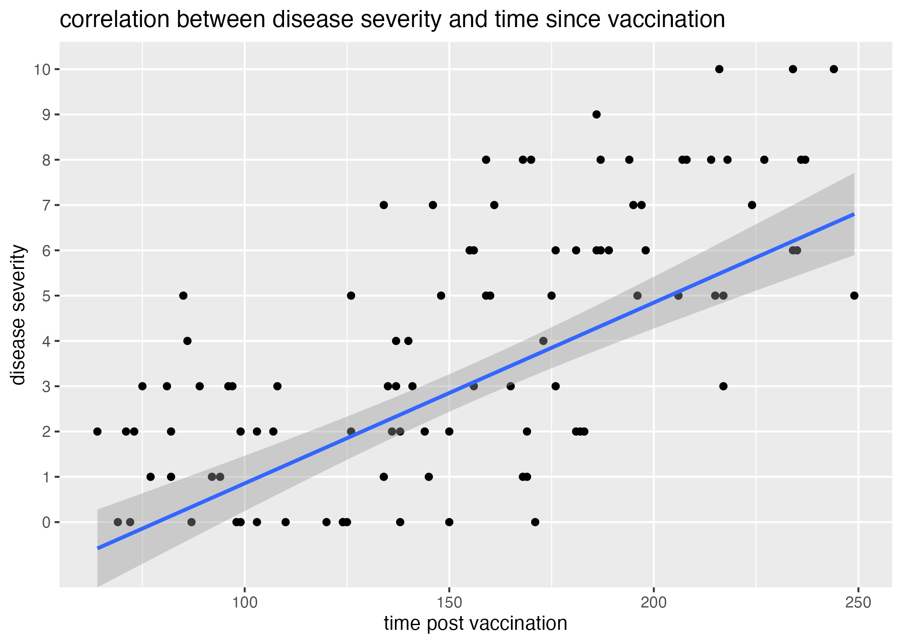
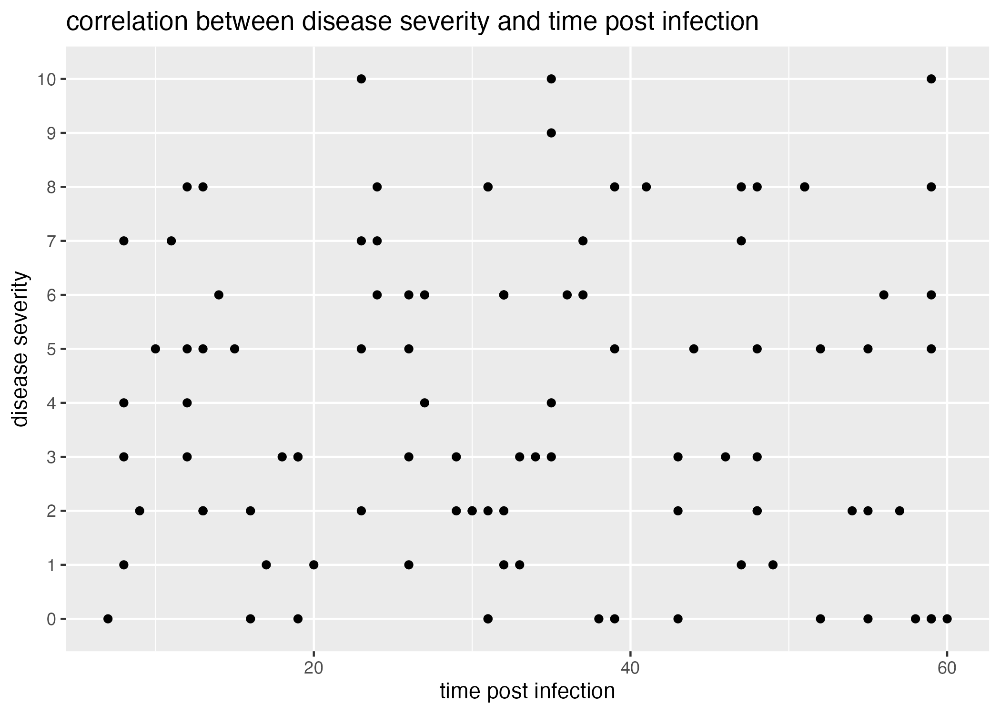

## Install and load required packages
#install.packages("dplyr")
library(dplyr)
#install.packages("purrr")
library(purrr)
#install.packages("lubridate")
library(lubridate)
#install.packages("ggplot2")
library(ggplot2)
#install.packages("readxl")
library(readxl)
#install.packages("openxlsx")
library(openxlsx)
# install.packages("gtsummary")
library(gtsummary)
# install.packages("flextable")
library(flextable)
#install.packages("here")
library(here)Data Exercise Week 4
Purpose
The purpose of this exercise is two-fold:
- I would like to demosntrate how to generate a synthetic dataset with hidden assocaitions between variables, and how we can uncover those variables through statistical techniques we employ on “real”-world, observational datasets, and
- I would like to make a comment about the difference between using statistics to make predictive models and using statistics to infer causality; how do we design a data analysis that allows us to generate hypotheses about the relationships between variables, and to begin to explore and test these hypotheses?
To do so, I am going to generate a synthetic dataset of a hypothetical group of patients who have tested postitive for some infection. These patients will have given us information about their age, the date of their post recent vaccination against this infection, and the approximate date they believed they were infected. Lastly, the severity of their illness will be reported on a 1-10 scale.
Disease severity will be assigned to each individual probabilistically, given their age and the time between the date of their vaccination and the date of their infection.
In my analysis, I will demonstrate that good predictive models can be built with simply the reported variables (age, time_post_vaccination, and time_post_infection.)
However, I will show that the best fitting model is that which incorporates two varaibles only: age, and a manipulated variable representing the time between vaccination and infection. This is the true predictor, or the two variables I used to generate disease severity.
The best model thus becomes a topic for discussion: do we want the simplest model (fewest variables) which can predict diesease severity? Do we want to best fitting model that utilizes only the reported variables? Do we want to develop a model to test a hypothesis - for instance, that individuals who were more recently vaccinated before they were infected have a better outcome?
Generating a synthetic dataset
For this assignment, I will be generating a synthetic dataset with built-in associations between variables. Then, I will be recovering these associations.
Exploring Synthetic Data: Do I observe the correct predictors for disease severity?
In the following code chunk, I explore my synthetic dataset to see which variables appear to have the greatest effect on disease_severity.
# what is the structure? Do my variables take the form I expect?
str(data)'data.frame': 100 obs. of 5 variables:
$ pat_id : chr "ID_514" "ID_562" "ID_278" "ID_625" ...
$ age : int 46 17 19 43 19 31 21 29 26 44 ...
$ time_post_vaccination: int 176 150 125 124 124 135 145 94 171 110 ...
$ time_post_infection : int 35 57 16 59 60 19 49 17 31 58 ...
$ disease_severity : Factor w/ 11 levels "0","1","2","3",..: 4 3 1 1 1 4 2 2 1 1 ...summary(data) pat_id age time_post_vaccination time_post_infection
Length:100 Min. :14.00 Min. : 64.0 Min. : 7.00
Class :character 1st Qu.:42.50 1st Qu.:109.5 1st Qu.:19.75
Mode :character Median :63.50 Median :155.5 Median :32.00
Mean :62.26 Mean :153.2 Mean :33.02
3rd Qu.:83.25 3rd Qu.:187.5 3rd Qu.:47.00
Max. :99.00 Max. :249.0 Max. :60.00
disease_severity
2 :16
0 :14
3 :13
5 :12
8 :12
6 :11
(Other):22 # what is the distribution of individuals by age? disease_severity?
plot0 = ggplot() + geom_histogram(data = data, aes(x = age, y=..density..), colour="black", fill="white") +
geom_density(data = data, aes(x = age), alpha = 0.2, fill = "salmon") +
geom_vline(xintercept = mean(data$age), color="salmon", linetype="dashed", linewidth=1) +
labs(title = "distribution of patients by age")
plot1 = ggplot() + geom_histogram(data = data, aes(x = disease_severity), stat = "count", colour="black", fill="white") +
geom_vline(xintercept = ceiling(mean(as.numeric(levels(data$disease_severity))[data$disease_severity])), color="blue", linetype="dashed", linewidth=1) +
labs(title = "distribution of patients by disease severity")
# let's see distribution of ages in each disease severity category
plot2 = ggplot() + geom_boxplot(data = data, aes(x = disease_severity, y = age)) +
geom_point(data=data, aes(x = disease_severity, y = age, col = disease_severity), alpha = 0.75) +
labs(x = "disease severity", y = "age", title = "ages of patients in each disease category") +
theme(legend.position = "none") + # I dont want the legend to show
scale_color_manual(values = c("darkgreen",
"forestgreen",
"springgreen",
"olivedrab1",
"gold",
"goldenrod1",
"orange",
"darkorange2",
"orangered2",
"red3",
"darkred"))
# let's see if disease severity correlates with age
plot3 = ggplot() + geom_point(data=data, aes(x = age, y = disease_severity, col = time_post_vaccination)) +
geom_smooth(data = data, aes(x = age, y=as.numeric(levels(disease_severity))[disease_severity]), method = "lm") + #had to unfactor the disease severity categoriy with as.numeric(levels())[]
labs(x = "age", y = "disease severity", title = "correlation between disease severity and age")
#heck yeah it does, so that part of the simulation worked!
# let's see if disease severity correlates with time since vaccination
plot4 = ggplot() + geom_point(data = data, aes(x=time_post_vaccination, y=disease_severity)) +
geom_smooth(data = data, aes(x = time_post_vaccination, y=as.numeric(levels(disease_severity))[disease_severity]), method = "lm") + #had to unfactor the disease severity categoriy with as.numeric(levels())[]
labs(x = "time post vaccination", y = "disease severity", title = "correlation between disease severity and time since vaccination")
# same for time post infection
plot5 = ggplot() + geom_point(data = data, aes(x=time_post_infection, y=disease_severity)) +
labs(x = "time post infection", y = "disease severity", title = "correlation between disease severity and time post infection")
## save these files
#figure 0 - yes, I added one and was too lazy to change the numbering
figure_file = here("data-exercise", "figures", "age_distribution.png")
ggsave(filename = figure_file, plot=plot0)
#figure 1
figure_file = here("data-exercise", "figures", "severity_distribution.png")
ggsave(filename = figure_file, plot=plot1)
#figure 2
figure_file = here("data-exercise", "figures", "age_severity_boxplots.png")
ggsave(filename = figure_file, plot=plot2)
#figure 3
figure_file = here("data-exercise", "figures", "age_severity_scatter.png")
ggsave(filename = figure_file, plot=plot3)
#figure 4
figure_file = here("data-exercise", "figures", "time_post_vacc_severity_scatter.png")
ggsave(filename = figure_file, plot=plot4)
#figure 5
figure_file = here("data-exercise", "figures", "time_post_inf_severity_scatter.png")
ggsave(filename = figure_file, plot=plot5) I introduced an association between age and disease_severity, and I should observe some positive correlation between disease_severity and age.

Clearly, there is a correlation between age and disease severity (Figure 1.) Interestingly, the distribution of ages of patients with high disease severities is particularly narrow when compared to patients with lower disease severities; this can in part be attributed to a smaller representation of patients with high disease severity (Figure 2.)

However, we also need to take into consideration that there are a large number of older patients (Figure 3), and a wider distribution of the older aged individuals across disease severity.

Thus, there is likely some other variable influencing the number of patients with high disease severity. When I plot the correlation between age and disease severity and observe the associated time elapsed since last vaccination (Figure 4), it becomes apparent that higher disease severities are associated with longer times post vaccination (light colored dots).

Referring back to the generation of the dataset, I also introduced an association between the time between time_post_vaccination and time_post_infection and disease_severity. I expect that, without calculating and plotting this time difference itself against disease_severity, there should be some signal of the negative correlation in the plot of time_post_vaccination and disease_severity. Because time_post_vaccination has a wider range than time_post_infection, I anticipate it will have had a greater effect on the variation within the difference between time_post_vaccination and time_post_infection; thus, I expect this signal to be lost when plotting the relationship between time_post_infection and disease_severity.

There is, in fact, some positive correlation recovered between the time elapsed since a patient’s last vaccination and the severity of their disease (Figure 5.) However, the significance of this association is not apparent.
Lastly, I would also like to see if the time elapsed since being effected (how long the patient had been infected before the observation was made) has any visual effect- it’s important to see if my random sampling and pairing has generated any!

Figure 6 demonstrates that there is little correlation between disease severity and the time elapsed since becoming infected.
- Also greater variation in the ages of patients with lower disease severities than higher disease severities, and not just dependent upon fewer samples (more samples captured for older ages) -> though may be a result of fewer samples for youths. Could check this out by exploring ages before and after the mean as independent datasets (for later!)
Synthetic Data Analysis
Visually, I have recovered some association between disease_severity and age, as well as disease_severity and time_post_vaccination. I use the following linear regression model to determine the significance of these correlations.
# determine best fit linear models
fit1 = lm(data = data, as.numeric(levels(disease_severity))[disease_severity]~age) #how good is age at predicting disease severity (linearly)
fit2 = lm(data = data, as.numeric(levels(disease_severity))[disease_severity]~time_post_vaccination) #how good is time post vaccination at estimating disease severity?
# generate tables to present
table1 = fit1 %>% gtsummary::tbl_regression() #save summaries as tables using tbl_regression() function from gtsummary package
table2 = fit2 %>% gtsummary::tbl_regression() #save summaries as tables using tbl_regression() function from gtsummary package
# save summary tables
summarytable_file = here("data-exercise", "tables", "lm_severity_age.rds")
saveRDS(table1, file = summarytable_file)
summarytable_file = here("data-exercise", "tables", "lm_severity_time_post_vacc.rds")
saveRDS(table1, file = summarytable_file)
# extract p-values from summaries to display on figures
p.age = unname(summary(fit1)$coefficients[,"Pr(>|t|)"])[2]
p.time_post_vaccination = unname(summary(fit2)$coefficients[,"Pr(>|t|)"])[2]| Characteristic | Beta | 95% CI | p-value |
|---|---|---|---|
| age | 0.08 | 0.06, 0.09 | <0.001 |
| Characteristic | Beta | 95% CI | p-value |
|---|---|---|---|
| age | 0.08 | 0.06, 0.09 | <0.001 |
Both the association between disease severity and age as well as disease severity and time post vaccination are significant (\(p<0.05\); Table 1, Table 2.) Thus, either variable appears to be a pretty good predictor of disease severity.
But, we know from figures Figure 4 and, especially, Figure 5 that the interaction between these terms may be an even better predictor of disease severity. If our goal is to generate the best model to help predict the disease severity of a patient, we might want to fit a linear model with both of these variables as predictors.
The following code chunk fits this multi-variable linear model:
# determine best fit models
model1 = lm(as.numeric(levels(disease_severity))[disease_severity] ~ time_post_vaccination + time_post_infection + age, data=data)
# generate tables to present
table1 = model1 %>% gtsummary::tbl_regression() #save summaries as tables using tbl_regression() function from gtsummary package
# save summary tables
summarytable_file = here("data-exercise", "tables", "lm_severity_all.rds")
saveRDS(table1, file = summarytable_file)
# extract p-values from summaries to display on figures
p.all = unname(summary(model1)$coefficients[,"Pr(>|t|)"])[2]| Characteristic | Beta | 95% CI | p-value |
|---|---|---|---|
| age | 0.08 | 0.06, 0.09 | <0.001 |
This model also provides a significant p-value. But how different are the p-values for these three models: disease severity ~ age, disease severity ~ time post vaccination, and disease severity ~ age + time post vaccination + time post infection?
| age | time_post_vaccination | age + time_post_infection + time_post_vaccination | |
|---|---|---|---|
| 5.7339746^{-14} | 2.5827222^{-15} | 4.3594356^{-17} |
It looks like the multivariable linear regression of disease severity with age, time post vaccination, and time post infection fits the model significantly better than either age or time post vaccination alone.
If I were to receive this dataset without knowing the associations I built into (and if I weren’t particularly clever, jury’s out on that one!), I might stop there and say that either variable is a good predictor of illness.
But, I know that the true predictor of disease severity is the difference between time_post_vaccination and time_post_infection; that is, I wanted to generate the data so that individuals who were most recently vaccinated had a better disease outcome than those who were vaccinated a longer time before infection. In the following code chunk, I add the variable \(diff_between\) to the dataset - this is the time between vaccination and infection.
# add variable for time between vaccination and infection
data$diff_between = data$time_post_vaccination-data$time_post_infection
# determine best fit models
model2 = lm(as.numeric(levels(disease_severity))[disease_severity] ~ diff_between, data=data)
model3 = lm(as.numeric(levels(disease_severity))[disease_severity] ~ diff_between + age, data=data)
# generate tables to present
table2 = model2 %>% gtsummary::tbl_regression() #save summaries as tables using tbl_regression() function from gtsummary package
table3 = model3 %>% gtsummary::tbl_regression() #save summaries as tables using tbl_regression() function from gtsummary package
# save summary tables
summarytable_file = here("data-exercise", "tables", "lm_severity_diff_between.rds")
saveRDS(table2, file = summarytable_file)
# save summary tables
summarytable_file = here("data-exercise", "tables", "lm_severity_diff_between_age.rds")
saveRDS(table3, file = summarytable_file)
# extract p-values from summaries to display on figures
p.diff_between = unname(summary(model2)$coefficients[,"Pr(>|t|)"])[2]
p.diff_between_age = unname(summary(model3)$coefficients[,"Pr(>|t|)"])[2]| Characteristic | Beta | 95% CI | p-value |
|---|---|---|---|
| diff_between | 0.04 | 0.03, 0.05 | <0.001 |
| Characteristic | Beta | 95% CI | p-value |
|---|---|---|---|
| diff_between | 0.03 | 0.03, 0.04 | <0.001 |
| age | 0.06 | 0.04, 0.07 | <0.001 |
Tables Table 4 and Table 5 reveal that these models are also significant predictive models. Lets compare these fits with the best fit multi-variable model:
| age + time_post_infection + time_post_vaccination | diff_between | diff_between + age | |
|---|---|---|---|
| 4.3594356^{-17} | 1.1779262^{-16} | 2.3592392^{-17} |
We can see that the time between vaccination and infection (diff_between) is a better predictor of disease severity than either age or time elapsed since vaccination, though the mutli variable model with the three variable age, time_post_vaccination, and time_post_infection is still a better predictor than diff_between.
However, the best predictor is actually the multi-variable model with fewer variables! diff_between and age predict disease severity better than all three variables, age, time_post_vaccination, and time_post_infection. Plus, we know (because I generated the model!) that there is some causal motivation for creating this fourth variable, diff_between.
Conclusion
I want to make a note here that the most complex model might not always be the best fitting model, and furthermore, that we might miss some interesting interactions between variables if we don’t consider how the interactions between them can help predict our outcome when we build our models!
I also want to note that a “significant p-value” doesn’t mean that the biological/natural motivation behind your model is actually the truth; in fact, all of the regressions I performed predicted disease severity pretty well! If our goal is to make predictions about outcomes given predictor variables, then we might be motivated either to chose the simplest model that gives us the most robust output, or the best fitting model without assumptions of causality. But, if we want to begin testing hypotheses about why these variables are correlated with disease outcome, then we want to begin being clever about manipulations we can conduct with our variables to infer causality! (and then, of course, less observational and more causal studies, where we can! Cohort, etc…)